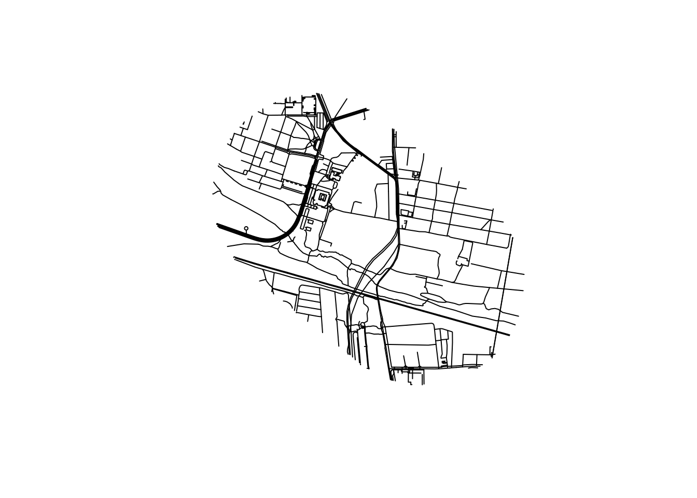
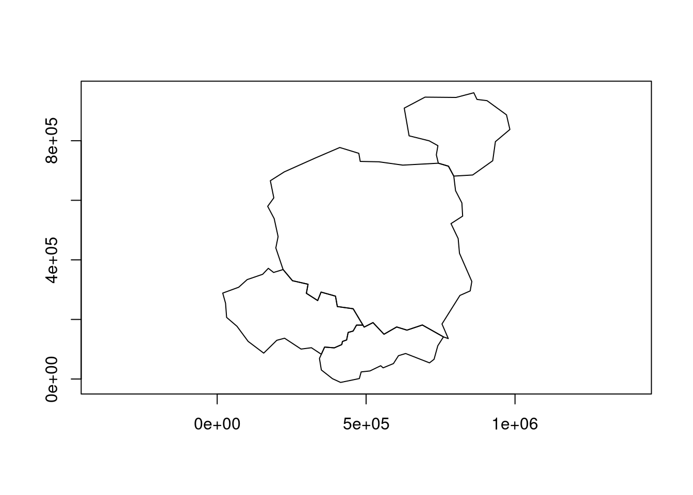
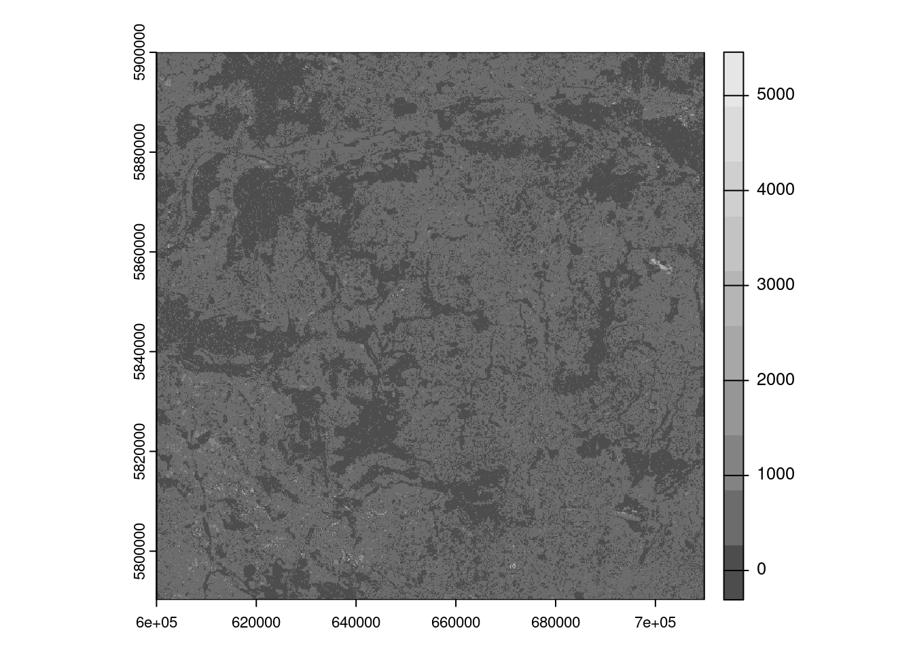
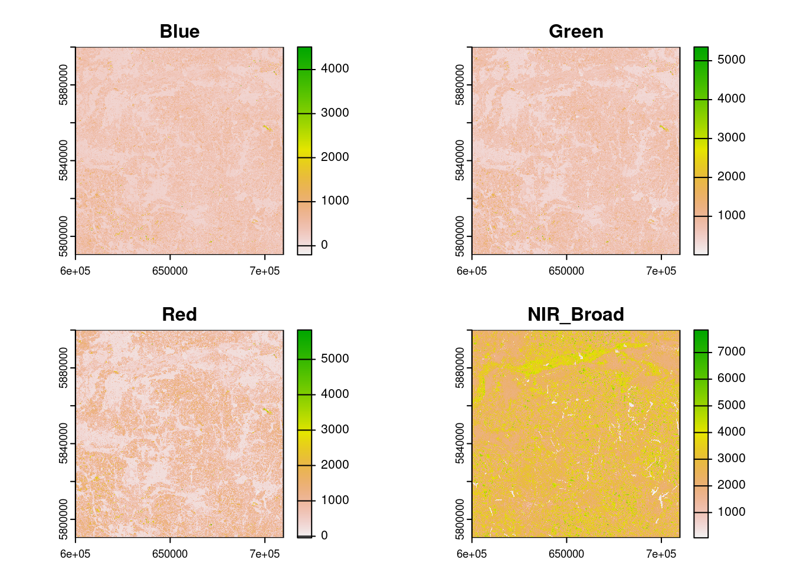
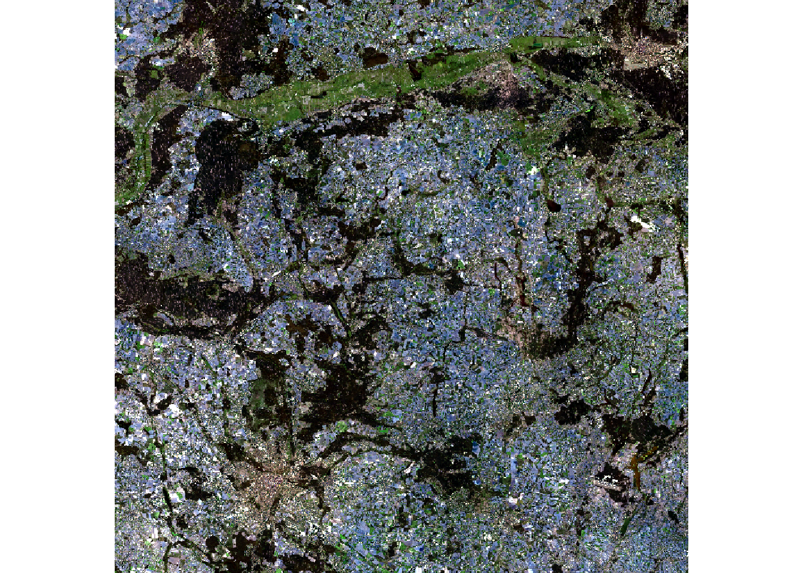
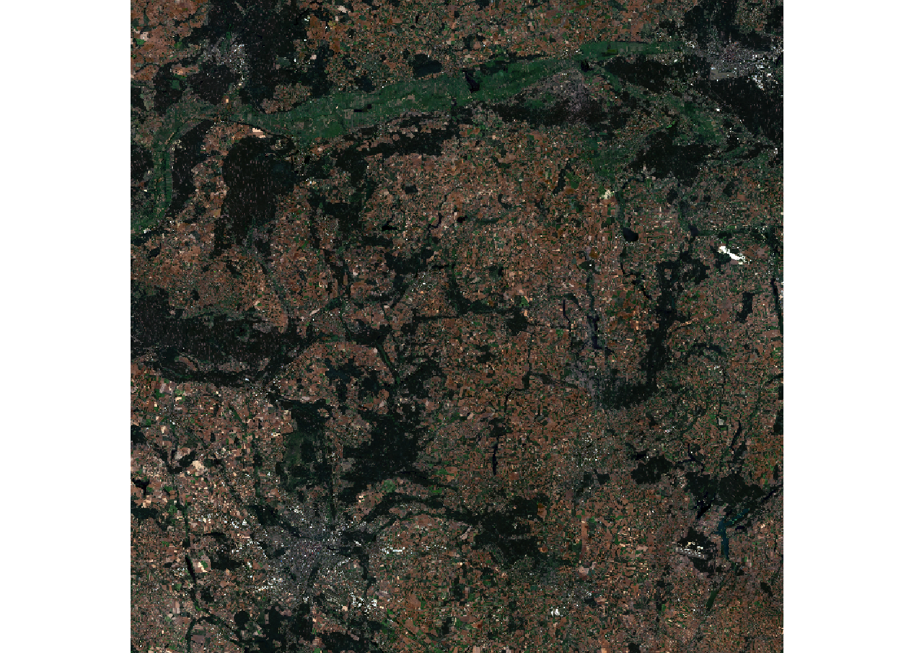
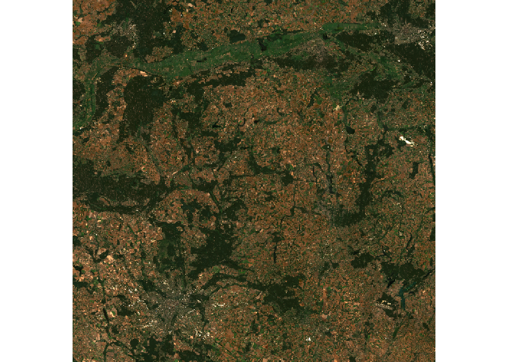
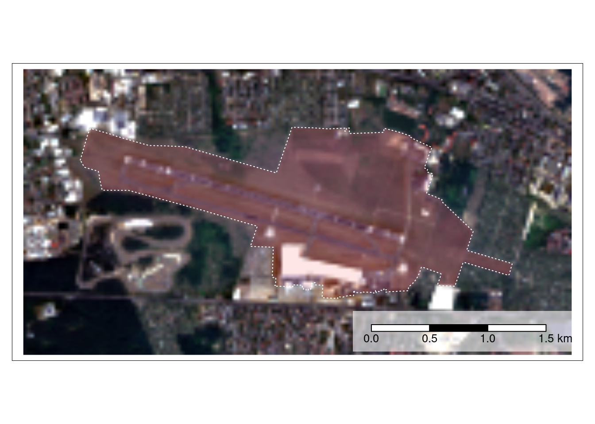

# Install remotes if not already installed
if (!requireNamespace("remotes")) {
install.packages("remotes")
}
# The packages we'll use
pkgs = c(
"sf",
"tidyverse",
"geos",
"ggspatial",
"spData"
)Tidy geographic data
with sf, dplyr, ggplot2, geos and friends
These materials were created for the OpenGeoHub Summer School 2023.
They can be used with reference to the accompanying slides, available at ogh23.robinlovelace.net/opengeohub2023.
See the parent repo and session description in the agenda for context.
Abstract
This lecture will provide an introduction to working with geographic data using R in a ‘tidy’ way. It will focus on using the sf package to read, write, manipulate, and plot geographic data in combination with the tidyverse metapackage. Why use the sf package with the tidyverse? The lecture will outline some of the ideas underlying the tidyverse and how they can speed-up data analysis pipelines, while making data analysis code easier to read and write. We will see how the following lines:
library(sf)
library(tidyverse)can provide a foundation on which the many geographic data analysis problems can be solved. The lecture will also cover on more recently developed packages that integrate with the tidyverse to a greater and lesser extent. We will look at how the geos package, which provides a simple and high-performance interface to the GEOS library for performing geometric operations on geographic data, integrates with the tidyverse. The tidyverse is not the right tool for every data analysis task and we touch on alternatives for working with raster data, with reference to the terra package, and alternative frameworks such as data.table. Finally, we will also look at how the ‘tidy’ philosophy could be implemented in other programming languages, such as Python.
The focus throughout will be on practical skills and using packages effectively within the wider context of project management tools, integrated development environments (we recommend VS Code with appropriate extensions or RStudio), and version control systems.
1 Introduction
1.1 Learning objectives
By the end of the session, participants will be able to:
- Read, write, manipulate, and plot geographic data using the
sfpackage - Use the
tidyversemetapackage to speed-up the writing of geographic data analysis pipelines - Use the
geospackage to perform geometric operations on geographic data - Understand the strengths and weaknesses of the
tidyversefor geographic data analysis
1.2 Prerequisites
We recommend you run the code in the practical session with a modern integrated development environment (IDE) such as
- RStudio: an IDE focussed on data science and software development with R. See posit.co for installation instructions.
- VS Code: a general purpose, popular and future-proof IDE with support for R. See github.com/REditorSupport/vscode-R and quarto.org for installation instructions.
After you have installed a suitable IDE you will need to install R packages used in this tutorial. You can install the packages we’ll use with the following commands:
remotes::install_cran(pkgs)After running the above commands, you should be able to load the packages with the following command (we will load the packages individually in subsequent sections):
sapply(pkgs, require, character.only = TRUE)2 An introduction to geographic data in the tidyverse
The tidyverse is a collection of packages that provides a unified set of functions for data science. The name ‘tidyverse’ is a reference to the ‘tidy data’ concept, which means simple data that is in the form of one observation per row and one variable per column (Wickham 2014). The meaning has broadened to refer to a way of doing data analysis, that tends to make heavy use of tidyverse packages. Load the tidyverse with the following command:
library(tidyverse)── Attaching core tidyverse packages ──────────────────────── tidyverse 2.0.0 ──
✔ dplyr 1.1.2 ✔ readr 2.1.4
✔ forcats 1.0.0 ✔ stringr 1.5.0
✔ ggplot2 3.4.3 ✔ tibble 3.2.1
✔ lubridate 1.9.2 ✔ tidyr 1.3.0
✔ purrr 1.0.2
── Conflicts ────────────────────────────────────────── tidyverse_conflicts() ──
✖ dplyr::filter() masks stats::filter()
✖ dplyr::lag() masks stats::lag()
ℹ Use the conflicted package (<http://conflicted.r-lib.org/>) to force all conflicts to become errorsAs shown in the output, the package loads 9 sub-packages. In this tutorial we will focus on
dplyr, which provides convenient functions for manipulating data framesggplot2, which provides a powerful and flexible system for creating plots
A good way to understand it is to get started with a small dataset. So let’s load the sf package and the spData package, which contains the world dataset:
library(sf)Linking to GEOS 3.10.2, GDAL 3.4.1, PROJ 8.2.1; sf_use_s2() is TRUElibrary(spData)The legacy packages maptools, rgdal, and rgeos, underpinning the sp package,
which was just loaded, will retire in October 2023.
Please refer to R-spatial evolution reports for details, especially
https://r-spatial.org/r/2023/05/15/evolution4.html.
It may be desirable to make the sf package available;
package maintainers should consider adding sf to Suggests:.
The sp package is now running under evolution status 2
(status 2 uses the sf package in place of rgdal)To access larger datasets in this package, install the spDataLarge
package with: `install.packages('spDataLarge',
repos='https://nowosad.github.io/drat/', type='source')`After loading the packages run the following commands to create an object called countries, containing countries whose centroids are within 200km of the Polish border:
names(world) # check we have the data [1] "iso_a2" "name_long" "continent" "region_un" "subregion" "type"
[7] "area_km2" "pop" "lifeExp" "gdpPercap" "geom" poland = world |>
filter(name_long == "Poland")
world_centroids = world |>
st_centroid()Warning: st_centroid assumes attributes are constant over geometriescountry_centroids = world_centroids |>
st_filter(
poland,
.predicate = st_is_within_distance,
dist = 2e5
)
countries = world |>
filter(name_long %in% country_centroids$name_long)
countries_df = countries |>
select(name_long, pop, area_km2) |>
st_drop_geometry()Don’t worry about the syntax for now. The important thing is that we now have a data frame with three columns, representing the name, population and area of four countries. We can print out the contents of the data frame by typing its name (this is equivalent to print(countries_df)):
countries_df# A tibble: 4 × 3
name_long pop area_km2
* <chr> <dbl> <dbl>
1 Poland 38011735 310402.
2 Lithuania 2932367 63831.
3 Slovakia 5418649 47068.
4 Czech Republic 10525347 81208.The output above shows information about each country in a tabular. A feature of the tidyverse is that its default data frame class (the tibble which extends base R’s data.frame as shown below) prints results in an informative and space-efficient way.
class(countries_df)[1] "tbl_df" "tbl" "data.frame"ggplot2 is dedicated plotting package that is loaded when you load the tidyverse. It has native support for geographic objects, as shown in Figure 1, which shows the output of plot(countries) next to the equivalent ggplot2 code.
plot(countries)Warning: plotting the first 9 out of 10 attributes; use max.plot = 10 to plot
allcountries |>
ggplot() +
geom_sf()
A characteristic feature of the tidyverse is the use of the pipe operator. You can use R’s new native pipe operator (|>), first available in R 4.1.0, or the magrittr pipe operator (%>%).
The pipes chain together functions, making it easier to read and write code. It can be particularly useful when used in combination with RStudio’s intellisense feature, which provides suggestions for column names as you type. Try typing the following in RStudio and hitting Tab with the curso located between the brackets on the final line to see this in action. It will allow you to select the variable you’re interested in without quote marks, using a feature called non-standard evaluation (NSE) (Wickham 2019).
countries_df |>
filter()2.1 Reading and writing geographic data
You can read and write a wide range of vector geographic data with sf. Save the countries object to a file called countries.geojson and inspect the result.
sf::write_sf(countries, "countries.geojson", delete_dsn = TRUE)You can read the file in again with read_sf() (which returns a ‘tidyverse compliant’ tibble data frame) or st_read(), as shown below.
countries_new1 = sf::read_sf("countries.geojson")
countries_new2 = sf::st_read("countries.geojson")Reading layer `countries' from data source
`/home/runner/work/opengeohub2023/opengeohub2023/countries.geojson'
using driver `GeoJSON'
Simple feature collection with 4 features and 10 fields
Geometry type: MULTIPOLYGON
Dimension: XY
Bounding box: xmin: 12.24011 ymin: 47.75843 xmax: 26.58828 ymax: 56.37253
Geodetic CRS: WGS 84For most purposes the two representations are the same, although the ‘tibble’ version’s print outpout is slightly different.
countries_new1 |>
head(2)Simple feature collection with 2 features and 10 fields
Geometry type: MULTIPOLYGON
Dimension: XY
Bounding box: xmin: 14.07452 ymin: 49.0274 xmax: 26.58828 ymax: 56.37253
Geodetic CRS: WGS 84
# A tibble: 2 × 11
iso_a2 name_long continent region_un subregion type area_km2 pop lifeExp
<chr> <chr> <chr> <chr> <chr> <chr> <dbl> <dbl> <dbl>
1 PL Poland Europe Europe Eastern Eu… Sove… 310402. 3.80e7 77.6
2 LT Lithuania Europe Europe Northern E… Sove… 63831. 2.93e6 74.5
# ℹ 2 more variables: gdpPercap <dbl>, geometry <MULTIPOLYGON [°]>countries_new2 |>
head(2)Simple feature collection with 2 features and 10 fields
Geometry type: MULTIPOLYGON
Dimension: XY
Bounding box: xmin: 14.07452 ymin: 49.0274 xmax: 26.58828 ymax: 56.37253
Geodetic CRS: WGS 84
iso_a2 name_long continent region_un subregion type
1 PL Poland Europe Europe Eastern Europe Sovereign country
2 LT Lithuania Europe Europe Northern Europe Sovereign country
area_km2 pop lifeExp gdpPercap geometry
1 310402.33 38011735 77.60244 24347.07 MULTIPOLYGON (((23.48413 53...
2 63831.09 2932367 74.51707 26258.21 MULTIPOLYGON (((26.49433 55...A nice function to explore the differences between the two objects is waldo::compare(). It shows that, other than their classes, the two objects are identical:
waldo::compare(countries_new1, countries_new2)`class(old)`: "sf" "tbl_df" "tbl" "data.frame"
`class(new)`: "sf" "data.frame"See the full list of file formats that you can read and write with sf with the following commands:
drvs = sf::st_drivers() |>
as_tibble()
head(drvs)# A tibble: 6 × 7
name long_name write copy is_raster is_vector vsi
<chr> <chr> <lgl> <lgl> <lgl> <lgl> <lgl>
1 ESRIC Esri Compact Cache FALSE FALSE TRUE TRUE TRUE
2 FITS Flexible Image Transport System TRUE FALSE TRUE TRUE FALSE
3 PCIDSK PCIDSK Database File TRUE FALSE TRUE TRUE TRUE
4 netCDF Network Common Data Format TRUE TRUE TRUE TRUE TRUE
5 PDS4 NASA Planetary Data System 4 TRUE TRUE TRUE TRUE TRUE
6 VICAR MIPL VICAR file TRUE TRUE TRUE TRUE TRUE 2.1.1 Exercises
Re-create the
country_centroidsobject, usingworld_centroidsandpolandand inputs, but this time using base R syntax with the[operator.- Bonus: use the
bench::mark()function to compare the performance of the base R and tidyverse implementation - Open question: Is this a good thing to benchmark? Why or why not?
- Bonus: use the
- Inspect the full list of drivers, e.g. with the command
View(drvs).- Which formats are you likely to use and why?
- Bonus: take a look at Chapter 8 of Geocomputation with R for more on reading and writing geographic (including raster) data with R.
2.2 Attribute operations with dplyr
dplyr is a large package with many functions for working with data frames. The five key ‘verbs’ described as:
mutate()adds new variables that are functions of existing variablesselect()picks variables based on their names.filter()picks cases based on their values.summarise()reduces multiple values down to a single summary.arrange()changes the ordering of the rows.
Let’s take a brief look at each.
countries_modified = countries |>
mutate(pop_density = pop / area_km2) |>
select(name_long, pop_density) |>
filter(pop_density > 100) |>
arrange(desc(pop_density))
countries_modifiedSimple feature collection with 3 features and 2 fields
Geometry type: MULTIPOLYGON
Dimension: XY
Bounding box: xmin: 12.24011 ymin: 47.75843 xmax: 24.02999 ymax: 54.85154
Geodetic CRS: WGS 84
# A tibble: 3 × 3
name_long pop_density geom
<chr> <dbl> <MULTIPOLYGON [°]>
1 Czech Republic 130. (((15.017 51.10667, 14.57072 51.00234, 14.30701 51…
2 Poland 122. (((23.48413 53.9125, 23.24399 54.22057, 22.7311 54…
3 Slovakia 115. (((22.55814 49.08574, 21.60781 49.47011, 20.88796 …The summarise() function is often used in combination with group_by(), e.g. as follows:
countries_summarised = countries |>
group_by(contains_a = str_detect(name_long, "a")) |>
summarise(n = n(), mean_pop = mean(pop))
countries_summarisedSimple feature collection with 2 features and 3 fields
Geometry type: POLYGON
Dimension: XY
Bounding box: xmin: 12.24011 ymin: 47.75843 xmax: 26.58828 ymax: 56.37253
Geodetic CRS: WGS 84
# A tibble: 2 × 4
contains_a n mean_pop geom
<lgl> <int> <dbl> <POLYGON [°]>
1 FALSE 1 10525347 ((15.017 51.10667, 14.57072 51.00234, 14.30701 51.…
2 TRUE 3 15454250. ((26.49433 55.61511, 25.53305 56.1003, 25.00093 56…The operation creates a new variable called contains_a that is TRUE if the country name contains an “a” and FALSE otherwise. Perhaps more impressively, it also automatically updated the geometry column of the combined countries containing the letter “a”, highlighting dplyr’s ability to work with geographic data represented as sf objects.
countries_summarised |>
ggplot() +
geom_sf(aes(fill = contains_a)) +
geom_sf(data = countries, fill = NA, linetype = 3) 2.2.1 Exercises
- Create a new data frame called
countries_modified2that contains the name, population and area of countries with a population density of more than 100 people per km2, sorted by area in descending order. - Do the same with base R functions and the
[operator.- What are the pros and cons of each?
- Which do you prefer?
2.3 Making maps with ggplot2
As shown above, geom_sf() works ‘out of the box’ with geographic data. We can modify plotting commands to control outputs as showing in Figure 3 and generate publishable maps.
library(ggspatial)
countries |>
ggplot() +
geom_sf(fill = "grey80", color = "black") +
geom_sf(data = countries_modified, aes(fill = pop_density)) +
scale_fill_viridis_c() +
theme_minimal()
Map making is an iterative and time consuming process. Iterate on the code above, e.g. by changing the color palette, adding a title, and adding a legend.
There are many add-ons to ggplot2. ggspatial can be used to add a basemap to a plot with annotation_map_tile(), as illustrated in Figure 4.
rosm::osm.types() [1] "osm" "opencycle" "hotstyle"
[4] "loviniahike" "loviniacycle" "stamenbw"
[7] "stamenwatercolor" "osmtransport" "thunderforestlandscape"
[10] "thunderforestoutdoors" "cartodark" "cartolight" ggplot() +
annotation_map_tile() +
layer_spatial(countries_modified, aes(fill = pop_density),
linewidth = 3, alpha = 0.3) +
scale_fill_viridis_c()
|
| | 0%
|
|================== | 25%
|
|=================================== | 50%
|
|==================================================== | 75%
|
|======================================================================| 100%2.3.1 Exercises
- With reference to the documentation at ggplot2.tidyverse.org/index.html, modify the code above to create a map with a title, legend and a different color palette.
- With reference to paleolimbot.github.io/ggspatial/, add annotations including scale bar, north arrow and a text label to the map.
- Bonus: try map making with
tmapand test out the interactive mode (set withtmap_mode("interactive")).” - Bonus: try reproducing maps presented in Chapter 9 of Geocomputation with R with
ggplot2andggspatial. Which mapping framework do you prefer and why? - If you use raster data, take a look at the
tidyterradocumentation.
3 Data from OSM and data frames
We’ll start this section by creating some data ourselves, representing 4 points of interest (pois) in relation to the OpenGeoHub Summer School 2023.
poi_df = tribble(
~name, ~lon, ~lat,
"Faculty", 16.9418, 52.4643,
"Hotel ForZa", 16.9474, 52.4436,
"Hotel Lechicka", 16.9308, 52.4437,
"FairPlayce", 16.9497, 52.4604
)
poi_sf = sf::st_as_sf(poi_df, coords = c("lon", "lat"))
sf::st_crs(poi_sf) = "EPSG:4326"# column: screen-inset-shaded
library(leaflet)
leaflet() %>%
addTiles() %>% # Add default OpenStreetMap map tiles
addMarkers(
lng = poi_df$lon,
lat = poi_df$lat,
popup = poi_df$name
)For comparison, we can create the same map with a single line of code with {tmap} (after loading and setting-up the package) as follows:
library(tmap)
tmap_mode("view")tmap mode set to interactive viewingWe will also check the version of {tmap} that we’re using, in anticipation of a major update (to v4, expected later in 2023).
tm_shape(poi_sf) + tm_bubbles(popup.vars = "name")The interactive maps below illustrate the outputs of the preceding map-making commands, highlighting the convenience of using {tmap}, which requires far fewer lines of code, although {leaflet} and other low-level map-making packages can offer more control.
{leaflet} (left), and 1 line of {tmap} code (right).Turn off the interactive mode as follows.
tmap_mode("plot")tmap mode set to plottingAs a taster for the OSM workshop, let’s read-in some data from OSM. As our study area, we’ll use a 500 m buffer around the convex hull of the Faculty and FairPlayce points.
pois_buffer = poi_sf |>
filter(str_detect(name, "Fair|Faculty")) |>
st_union() |>
st_convex_hull() |>
st_buffer(dist = 500)extra_tags = c("maxspeed", "foot", "bicycle")lines = osmextract::oe_get(
"Poznan",
layer = "lines",
extra_tags = extra_tags,
boundary = pois_buffer,
boundary_type = "clipsrc"
)Filter out only the ones we need as follows:
lines_highways = lines |>
filter(!is.na(highway))
plot(lines$geometry)
table(lines$highway)
footway living_street path platform proposed
83 13 49 8 13
residential service steps tertiary track
76 67 12 9 10 Let’s add some polygons to the map, representing the buildings in the area.
polygons = osmextract::oe_get(
"Poznan",
layer = "multipolygons",
boundary = pois_buffer,
boundary_type = "clipsrc"
)buildings = polygons |>
filter(!is.na(building))
polygons_geog = buildings |>
filter(str_detect(name, "Geog"))Plot the results as follows:
m_osm = tm_shape(buildings) +
tm_fill("lightgrey") +
tm_shape(lines_highways) +
tm_lines() +
tm_shape(polygons_geog) +
tm_polygons(col = "red") You can export the lines_highways object to GeoJSON as follows:
sf::write_sf(lines_highways, "data/lines_highways.geojson")3.1 Loading a GPX file
Let’s load a GPX file representing a route from the Faculty to FairPlayce.
u_gpx = "https://www.openstreetmap.org/trace/9741677/data"
f_gpx = paste0(basename(u_gpx), ".gpx")
download.file(u_gpx, f_gpx)
sf::st_layers(f_gpx)Driver: GPX
Available layers:
layer_name geometry_type features fields crs_name
1 waypoints Point 0 23 WGS 84
2 routes Line String 0 12 WGS 84
3 tracks Multi Line String 1 12 WGS 84
4 route_points Point 0 25 WGS 84
5 track_points Point 1525 29 WGS 84gpx = sf::read_sf(f_gpx, layer = "track_points")We can divide the GPS points into n groups of equal length as follows:
gpx_mutated = gpx |>
mutate(minute = lubridate::round_date(time, "minute")) |>
mutate(second = lubridate::round_date(time, "second"))
summary(gpx_mutated$minute) Min. 1st Qu.
"2023-08-27 08:02:00.0000" "2023-08-27 08:20:00.0000"
Median Mean
"2023-08-27 08:36:00.0000" "2023-08-27 08:38:42.8065"
3rd Qu. Max.
"2023-08-27 08:59:00.0000" "2023-08-27 09:14:00.0000" Let’s create an animated map, as illustrated in Figure 6, with the following code:
# ?tmap_animation
m_faceted = m_osm +
tm_shape(gpx_mutated[pois_buffer, ]) +
tm_dots(size = 0.8, legend.show = FALSE) +
tm_facets("second", free.coords = FALSE, ncol = 1, nrow = 1) +
tm_scale_bar()
tmap_animation(m_faceted, delay = 2, filename = "gpx.gif")
3.2 Exercises
- Create
sfobjects representing the following features in Poznan (hint: try using functions for geocoding such asstplanr::geo_code()ortmaptools::geocode_OSM()):- The main train station
- The airport
- Identify interesting features in the surrounding area from OSM and plot them in static and interactive maps.
4 tidyverse + geos
The geos package provides a simple and high-performance interface to the GEOS library for performing geometric operations on geographic data. Load it as follows:
library(geos)geos works well with the tidyverse and sf packages, as shown below.
4.1 Finding suitable coordinate reference systems
geos is designed to work with projected data, so we will reproject the countries object to a different CRS before proceeding.
suitable_crs = crsuggest::suggest_crs(countries)
suitable_crs# A tibble: 10 × 6
crs_code crs_name crs_type crs_gcs crs_units crs_proj4
<chr> <chr> <chr> <dbl> <chr> <chr>
1 3328 Pulkovo 1942(58) / GUGiK-80 project… 4179 m +proj=st…
2 2180 ETRF2000-PL / CS92 project… 9702 m +proj=tm…
3 3120 Pulkovo 1942(58) / Poland zone… project… 4179 m +proj=st…
4 2173 Pulkovo 1942(58) / Poland zone… project… 4179 m +proj=st…
5 2172 Pulkovo 1942(58) / Poland zone… project… 4179 m +proj=st…
6 2177 ETRF2000-PL / CS2000/18 project… 9702 m +proj=tm…
7 2178 ETRF2000-PL / CS2000/21 project… 9702 m +proj=tm…
8 8353 S-JTSK [JTSK03] / Krovak East … project… 8351 m +proj=kr…
9 8352 S-JTSK [JTSK03] / Krovak project… 8351 m +proj=kr…
10 5514 S-JTSK / Krovak East North project… 4156 m +proj=kr…We’ll use the second of these, EPSG:2180, after checking (the package’s top suggestion is not always the most up-to-date or appropriate option).
crs1 = paste0("EPSG:", suitable_crs$crs_code[2])
crs1[1] "EPSG:2180"countries_projected = sf::st_transform(countries, crs = crs1)countries_geos = as_geos_geometry(sf::st_geometry(countries_projected))
countries_geos<geos_geometry[4] with CRS=ETRF2000-PL / CS92>
[1] <MULTIPOLYGON [169518 135742...854986 777315]>
[2] <MULTIPOLYGON [628064 681310...982752 961090]>
[3] <MULTIPOLYGON [343349 -11504...759703 189400]>
[4] <MULTIPOLYGON [18570 83048...489369 371643]> The package only deals with geometries: the attribute data is removed when you convert an sf object to a geos object. You can store geos objects in a data frame and still use dplyr functions to process them:
countries_geos_df = bind_cols(countries_df, geos = countries_geos)
countries_summarised_df = countries_geos_df |>
group_by(contains_a = str_detect(name_long, "a")) |>
summarise(n = n(), mean_pop = mean(pop))
countries_summarised_df# A tibble: 2 × 3
contains_a n mean_pop
<lgl> <int> <dbl>
1 FALSE 1 10525347
2 TRUE 3 15454250.Note: the geos column has gone! This is because geos columns are not ‘sticky’ like sf columns. Let’s see how to get them back.
countries_union1 = countries_geos |>
geos_unary_union()
plot(countries_union1)
countries_union2 = countries_geos |>
geos_make_collection() |>
geos_unary_union()
plot(countries_union2)

However, you can add the union of the grouped columns as follows:
countries_summarised_geos = countries_geos_df |>
group_by(contains_a = str_detect(name_long, "a")) |>
summarise(n = n(), mean_pop = mean(pop),
geometry = geos_unary_union(geos_make_collection(geos)))
countries_summarised_geos# A tibble: 2 × 4
contains_a n mean_pop geometry
<lgl> <int> <dbl> <geos_geom>
1 FALSE 1 10525347 <POLYGON [18570 83048...489369 371643]>
2 TRUE 3 15454250. <POLYGON [169518 -11504...982752 961090]>plot(countries_summarised_geos$geometry)
Convert back to an sf object as follows:
countries_summarised_geos_sf = st_as_sf(countries_summarised_geos)
# waldo::compare(
# countries_summarised,
# countries_summarised_geos_sf
# )Aside from geometry names and minor differences in the geometries, the two objects are identical. This raises the question: why use geos at all? The answer can be found by following the exercises below.
4.2 Exercises
- Benchmark the union operation in
geosandsfwith thebench::mark()function.- Which is faster?
- Which is easier to use?
- Which do you prefer?
5 Worked example: data from Poznan
For many people ‘learning by doing’ is the most effective way to pick up new technical skills. So let’s work with some larger datasets. Note: the input data and code below are adapted from Michael Dorman’s tutorial on Working with Spatial Data in Python.
5.1 Getting and reading-in the data
To get the data for this session, download and unzip the data.zip file in the releases. You can do that in R with the following commands:
u = "https://github.com/Robinlovelace/opengeohub2023/releases/download/data/data.zip"
f = basename(u)
if (!dir.exists("data")) {
download.file(u, f)
unzip(f)
}Check you have downloaded the files with the following command:
list.files("data")[1:3][1] "gtfs" "hls" "osm" 5.2 Vector data
Let’s start by reading-in a dataset representing transport-related features around Poznan (note: you need to have downloaded and unzipped the data.zip file into your project or working directory for this to work):
pol_all = sf::read_sf("./data/osm/gis_osm_transport_a_free_1.shp")
pol_allSimple feature collection with 282 features and 4 fields
Geometry type: POLYGON
Dimension: XY
Bounding box: xmin: 15.76877 ymin: 51.42587 xmax: 18.51031 ymax: 53.52821
Geodetic CRS: WGS 84
# A tibble: 282 × 5
osm_id code fclass name geometry
<chr> <int> <chr> <chr> <POLYGON [°]>
1 27923283 5656 apron <NA> ((16.84088 52.42479, 16.…
2 28396243 5656 apron <NA> ((16.9675 52.32743, 16.9…
3 28396249 5656 apron <NA> ((16.98029 52.32399, 16.…
4 28396250 5656 apron <NA> ((16.97407 52.32418, 16.…
5 30164579 5656 apron <NA> ((16.71011 53.16458, 16.…
6 32225811 5601 railway_station Czerwonak ((16.9798 52.46868, 16.9…
7 36204378 5622 bus_station <NA> ((16.95469 52.40964, 16.…
8 50701732 5651 airport Lądowisko Poznań-Be… ((17.19788 52.53491, 17.…
9 55590985 5622 bus_station Dworzec PKS-stanowi… ((17.20243 52.80927, 17.…
10 56064358 5651 airport Port lotniczy Zielo… ((15.76877 52.13175, 15.…
# ℹ 272 more rowsLet’s filter-out a feature that matches a particular character string:
pol = pol_all |>
filter(str_detect(name, "Port*.+Poz"))Plot it, first with base R and then with {ggplot2}and {tmap}, resulting in maps shown below.
plot(pol)
pol |>
ggplot() +
geom_sf()
tm_shape(pol) + tm_polygons()
We’ll read-in a point layer from a CSV file as shown below.
stops_raw = read_csv('data/gtfs/stops.txt')Rows: 2921 Columns: 6
── Column specification ────────────────────────────────────────────────────────
Delimiter: ","
chr (3): stop_code, stop_name, zone_id
dbl (3): stop_id, stop_lat, stop_lon
ℹ Use `spec()` to retrieve the full column specification for this data.
ℹ Specify the column types or set `show_col_types = FALSE` to quiet this message.stops_df = stops_raw |>
select(-stop_code)
stops = st_as_sf(stops_df, coords = c("stop_lon", "stop_lat"), crs = "EPSG:4326")5.2.1 Buffers
The most widly used way to create buffers in R is with the function st_buffer() from the sf package. Let’s create buffers of 150 m around each of the points in the poi_sf dataset. This is done in the following chunk, which first checks to see if the s2 spherical geometry engine is set to run (it is by default).
sf::sf_use_s2()[1] TRUEpoi_buffers = st_buffer(poi_sf, dist = 150)As described in Chapter 7 or Geocomputation with R, sf ‘knows that the world is round’ and uses a spherical geometry engine to calculate distances for unprojected data. This is a major advantage of sf over other packages for working with geographic data, such as GeoPandas in Python, which does not currently support spherical geometry operations (see issue 2098 in the GeoPandas issue tracker for details).
We can measure the area of the buffers with the following command:
areas = st_area(poi_buffers)A nice feature of sf is that it returns the area in square meters, even though the input data is in degrees. sf uses the units package behind the scenes to convert between units, meaning you can convert the output to different units, as shown below.
areas |>
units::set_units(ha)Units: [ha]
[1] 7.165668 7.164428 7.165692 7.166715Sometimes it’s useful to drop the units class, which can be done with the units::drop_units() function, as shown below.
areas |>
units::set_units(ha) |>
units::drop_units() |>
round()[1] 7 7 7 75.2.2 Spatial subsetting
Note: this section is adapted from Section 2.12 of Working with Spatial Data in Python. Let’s find the bus stops that are within 150 m of the poi_sf points.
stops_nearby = stops[poi_buffers, ]
stops_nearbySimple feature collection with 4 features and 3 fields
Geometry type: POINT
Dimension: XY
Bounding box: xmin: 16.92882 ymin: 52.44307 xmax: 16.94161 ymax: 52.4653
Geodetic CRS: WGS 84
# A tibble: 4 × 4
stop_id stop_name zone_id geometry
<dbl> <chr> <chr> <POINT [°]>
1 418 UAM Wydział Geografii A (16.94108 52.46419)
2 467 Umultowska A (16.92882 52.44426)
3 468 Umultowska A (16.93039 52.44307)
4 417 UAM Wydział Geografii A (16.94161 52.4653)5.2.3 Spatial joins
Spatial joins can be performed with the st_join() function as follows:
pois_joined = st_join(poi_buffers, stops)
pois_joinedSimple feature collection with 6 features and 4 fields
Geometry type: POLYGON
Dimension: XY
Bounding box: xmin: 16.92856 ymin: 52.44223 xmax: 16.95195 ymax: 52.46567
Geodetic CRS: WGS 84
# A tibble: 6 × 5
name geometry stop_id stop_name zone_id
* <chr> <POLYGON [°]> <dbl> <chr> <chr>
1 Faculty ((16.93959 52.46441, 16.93957 52.464… 418 UAM Wydz… A
2 Faculty ((16.93959 52.46441, 16.93957 52.464… 417 UAM Wydz… A
3 Hotel ForZa ((16.94759 52.44224, 16.94762 52.442… NA <NA> <NA>
4 Hotel Lechicka ((16.93275 52.44435, 16.93275 52.444… 467 Umultows… A
5 Hotel Lechicka ((16.93275 52.44435, 16.93275 52.444… 468 Umultows… A
6 FairPlayce ((16.9477 52.461, 16.94765 52.46092,… NA <NA> <NA> 5.2.4 Exercises
- Create a static map of the stops in Poznan, using the
stopsobject created above, with a mapping package of your preference. Set the colour of each stop byzone_id.- Bonus: also create an interactive map.
- Advanced: Reproduce the results presented above by following the Python code at geobgu.xyz/presentations/p_2023_ogh/01-vector.html.
- Which language do you prefer for the types of task presented here and why?
5.3 Raster data example
Building on the introduction to raster data with Python, this section introduces raster data with the {terra} package.
Load it as follows:
library(terra)terra 1.7.39
Attaching package: 'terra'The following object is masked from 'package:tidyr':
extractRead-in and plot a single raster layer with the following command:
src = rast('data/hls/HLS.S30.T33UXU.2022200T095559.v2.0.B02.tiff')
terra::plot(src, col = gray.colors(10))
We will translate the following Python code to R:
files = glob.glob('data/hls/*.tiff')files = list.files("data/hls", pattern = "tiff", full.names = TRUE)
files[1] "data/hls/HLS.S30.T33UXU.2022200T095559.v2.0.B02.tiff"
[2] "data/hls/HLS.S30.T33UXU.2022200T095559.v2.0.B03.tiff"
[3] "data/hls/HLS.S30.T33UXU.2022200T095559.v2.0.B04.tiff"
[4] "data/hls/HLS.S30.T33UXU.2022200T095559.v2.0.B08.tiff"r = rast(files)
rclass : SpatRaster
dimensions : 3660, 3660, 4 (nrow, ncol, nlyr)
resolution : 30, 30 (x, y)
extent : 6e+05, 709800, 5790240, 5900040 (xmin, xmax, ymin, ymax)
coord. ref. : WGS 84 / UTM zone 33N (EPSG:32633)
sources : HLS.S30.T33UXU.2022200T095559.v2.0.B02.tiff
HLS.S30.T33UXU.2022200T095559.v2.0.B03.tiff
HLS.S30.T33UXU.2022200T095559.v2.0.B04.tiff
HLS.S30.T33UXU.2022200T095559.v2.0.B08.tiff
names : Blue, Green, Red, NIR_Broad summary(r)Warning: [summary] used a sample Blue Green Red NIR_Broad
Min. :-213.0 Min. : 15.0 Min. : -12.0 Min. : 56
1st Qu.: 202.0 1st Qu.: 435.0 1st Qu.: 313.0 1st Qu.:2088
Median : 319.0 Median : 617.0 Median : 586.0 Median :2469
Mean : 342.3 Mean : 623.7 Mean : 669.2 Mean :2648
3rd Qu.: 434.0 3rd Qu.: 746.0 3rd Qu.: 955.0 3rd Qu.:3174
Max. :4508.0 Max. :5131.0 Max. :5428.0 Max. :6092 We can plot the result as follows:
plot(r)
plot(r), showing the four bands of the raster layerAs shown, the result is an object with Blue, Green, Red and NIR bands, in that order. We can select only Red, Green, Blue bands, in that order, as follows:
r_rgb = r[[c("Red", "Green", "Blue")]]If you try plotting the result with plotRGB(r), you will get an error. You can use the stretch argument of the function to stretch the values and avoid errors caused by outliers.
plotRGB(r, stretch = "lin")
We can also remove outliers with the stretch() or clamp() functions or manually, as shown below:
# r_clamp = clamp(r, 0, 4000)
r_stretch = stretch(r_rgb, minq = 0.001, maxq = 0.999)
top_01pct = quantile(values(r_rgb), probs = 0.999, na.rm = TRUE)
bottom_01pct = quantile(values(r_rgb), probs = 0.001, na.rm = TRUE)
r_to_plot = r_rgb
r_to_plot[r_rgb > top_01pct] = top_01pct
r_to_plot[r_rgb < bottom_01pct] = bottom_01pct

stretch() (left) and manually (right)Save the combined raster as follows:
# write the r file:
writeRaster(r, "data/hls/combined.tif", overwrite = TRUE)
writeRaster(r_to_plot, "data/hls/r_to_plot.tif", overwrite = TRUE)5.3.1 Masking and cropping
We can mask the raster with the pol polygon object as follows:
pol_projected = sf::st_transform(pol, crs = crs(r))
r_masked = mask(r, pol_projected)
|---------|---------|---------|---------|
=========================================
summary(r_masked)Warning: [summary] used a sample Blue Green Red NIR_Broad
Min. : 351.0 Min. : 623.0 Min. : 739.0 Min. :1165
1st Qu.: 482.0 1st Qu.: 744.8 1st Qu.: 803.0 1st Qu.:2136
Median : 526.0 Median : 775.0 Median : 892.0 Median :2338
Mean : 578.1 Mean : 843.7 Mean : 963.0 Mean :2228
3rd Qu.: 569.2 3rd Qu.: 821.2 3rd Qu.: 985.2 3rd Qu.:2485
Max. :1618.0 Max. :2016.0 Max. :2231.0 Max. :2709
NA's :100467 NA's :100467 NA's :100467 NA's :100467 As shown in the summary of the result, the majority of the values are now NA. That’s how masking works: it sets all values outside the polygon to NA. We can crop the raster to a 500 m buffer around the polygon as follows:
r_cropped = crop(r, sf::st_buffer(pol_projected, dist = 500))Let’s plot the result, illustrated in Figure 11.
tm_shape(stretch(r_cropped[[c("Red", "Green", "Blue")]], minq = 0.001, maxq= 0.98)) +
tm_rgb() +
tm_shape(pol_projected) +
tm_borders(col = "white", lty = 3) +
tm_fill(col = "red", alpha = 0.1) +
tm_scale_bar(bg.color = "white", bg.alpha = 0.6, text.size = 0.8) 
5.3.2 Exercises
- Experiment with arguments passed to
clamp(),stretch()andplotRGB()to see how they affect the output. - Try plotting the raster in another program like QGIS, which looks better?
- Advanced: Reproduce the results presented above by following the Python code at geobgu.xyz/presentations/p_2023_ogh/02-raster.html.
- Which language do you prefer for the types of task presented here and why?
- Advanced: Try plotting the raster with
{ggplot2}and{tmap}.- Which do you prefer and why?
6 Other tidy packages
There are many packages that integrate with the tidyverse, or which are inspired by it. Options include:
tidyterrafor working with raster data- DuckDB is a high-performance in-memory database that can be used with
dplyrthat is mature, well documented, and has a spatial extension - dtplyr, a
dplyr-compliant interface todata.tablefor working with large datasets - The
collapsepackage, which supportstidyversesyntax and which has some integration withsf tidypolars, an R interface to thepolarsRust crate (note: there is also a popular Python interface- The geoarrow spec and nascent implementations, none of which are yet ready for production use
How to assess which to use? My advice would be to focus on solving the problem, rather than the tools, in which case the tidyverse + sf + terra or stars should be more than adequate for most purposes. There can be major time savings made by sticking to established tools that are well documented and which have a large user base.
Developer time is more valuable than computer time, so a major factor in deciding which tool to use should be how reliable it is. Time spent debugging issues can be a major time sink, especially for new packages that are not yet well tested or documented. And for most purposes, the tools outlined in the previous sections are more than adequate, solving perhaps 90% of the problems you’re likely to encounter.
There are times when performance is important but as the saying goes, premature optimisation is the root of all evil, so don’t worry about performance until you have a working solution.
If you do need to wait longer than is feasible for your code to run, it is worth trying to identify the bottleneck (is there are a solution involving changing input datasets or workflows?) before having a look at alternatives. Established benchmarks for non-spatial data are https://duckdblabs.github.io/db-benchmark/ and https://www.pola.rs/benchmarks.html .
This section is offered more as a place to experiment than any concrete advice. My concrete advice is focus on the problem and solving it with the software is most appropriate for your use case.
6.1 tidypolars
If you want to give this package a spin, run the following command:
install.packages(
'tidypolars',
repos = c('https://etiennebacher.r-universe.dev/bin/linux/jammy/4.3', getOption("repos"))
)6.2 rsgeo
A work in progress is the rsgeo package, which aims to provide an seamless interface between R and the geo Rust crate. This could open the possiblity of calling other high-performance Rust libraries from R, although the package is at an early stage of development and probably not ready for production use.
We can check the installation works as follows:
install.packages('rsgeo', repos = c('https://josiahparry.r-universe.dev', 'https://cloud.r-project.org'))library(rsgeo)
Attaching package: 'rsgeo'The following object is masked from 'package:terra':
centroidsThe following objects are masked from 'package:ggplot2':
geom_point, geom_polygoncountries_rs = as_rsgeo(sf::st_geometry(countries_projected))
countries_rs<rs_MULTIPOLYGON[4]>
[1] MultiPolygon([Polygon { exterior: LineString([Coord { x: 794368.1325269318...
[2] MultiPolygon([Polygon { exterior: LineString([Coord { x: 971408.1994854225...
[3] MultiPolygon([Polygon { exterior: LineString([Coord { x: 759702.573276401,...
[4] MultiPolygon([Polygon { exterior: LineString([Coord { x: 221286.6800535069...bench::mark(check = FALSE,
sf = sf::st_union(countries_projected),
geos = geos::geos_make_collection(geos::geos_unary_union(countries_geos)),
rsgeo = rsgeo::union_geoms(countries_rs)
)# A tibble: 3 × 6
expression min median `itr/sec` mem_alloc `gc/sec`
<bch:expr> <bch:tm> <bch:tm> <dbl> <bch:byt> <dbl>
1 sf 5.54ms 6.46ms 153. 61.5KB 2.19
2 geos 113.1µs 130.6µs 6584. 0B 2.11
3 rsgeo 394.7µs 470.4µs 1979. 2.1KB 0 6.3 Arrow
library(arrow)
# write countries_projected to parquet file:
write_parquet(countries_projected, "data/countries_projected.parquet") # Fails7 Further reading
For more on raster data see https://kadyb.github.io/OGH2023/Clustering.html
The following free and open access resources provide a strong foundation for further learning in this space.
Wickham, Cetinkaya-Rundel, and Grolemund (2023), hosted at https://r4ds.hadley.nz/, is a detailed introduction to the tidyverse
Lovelace, Nowosad, and Muenchow (2019) provides a wide ranging yet beginner-friendly introduction to using R for geographic analysis
Pebesma and Bivand (2023), a textbook on spatial data science by the developers of
sfand other core ‘rspatial’ packagesAny other suggestions welcome, there’s much more out there!
References
Lovelace, Robin, Jakub Nowosad, and Jannes Muenchow. 2019. Geocomputation with R. CRC Press. https://r.geocompx.org/.
Pebesma, Edzer, and Roger Bivand. 2023. Spatial Data Science: With Applications in r. CRC Press. https://r-spatial.org/book/.
Wickham, Hadley. 2014. “Tidy Data.” The Journal of Statistical Software 14 (5). https://vita.had.co.nz/papers/tidy-data.pdf.
———. 2019. Advanced r, Second Edition. 2nd edition. Boca Raton: Chapman; Hall/CRC.
Wickham, Hadley, Mine Cetinkaya-Rundel, and Garrett Grolemund. 2023. R for Data Science: Import, Tidy, Transform, Visualize, and Model Data. 2nd edition. O’Reilly Media.